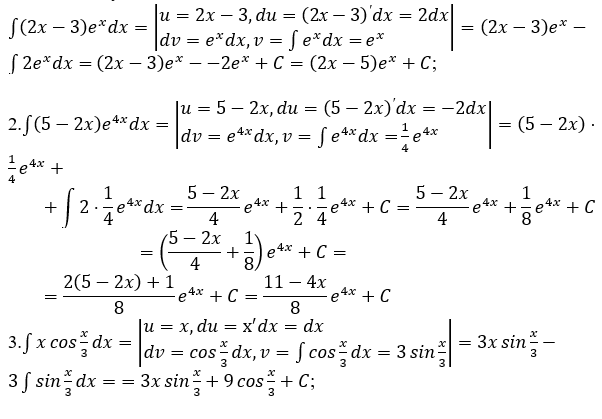
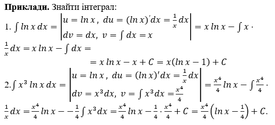

Тема заняття. Основні методи інтегрування: інтегрування частинами.
Інтегрування частинами
Нехай u(x) і v(x) мають неперервні похідні \(u^\prime\left(x\right)\) та \(v^\prime\left(x\right)\), тоді
\(\int{udv}=u\cdot v-\int{vdu}\). (1)
Ідея методу – привести до більш простого інтегралу.
У більшості випадків для інтегрування за u приймають:
1) складну для інтегрування функцію;
2) многочлен;
3) будь-яку функцію, що утворює добуток.
- В інтегралах виду \(\int{P\left(x\right)e^{ax}dx}\), \(\int{P\left(x\right)sin{a}xdx}\), \(\int{P\left(x\right)cos{a}xdx}\), де \(P\left(x\right)\) - многочлен відносно змінної х, а – деяке число, вважають, що \(u=P\left(x\right)\), а всі інші співмножники беруть за \(dv\).
Приклади. Знайти інтеграл:
- \(\int{\left(2x-3\right)e^xdx}\). Покладемо \(u=2х-3\), \(dv=е_хdx\). Тоді \(du=u^\prime dx=\left(2х-3\right)^\prime dx=2dx\), \(v=\int{dv}=\int{e^xdx=e^x}\) (вважаємо на цьому етапі розв’язку, що довільна стала C = 0). Знайшовши всі потрібні значення, підставимо їх в формулу (1)
\(\int{\left(2x-3\right)e^xdx}=\left(2x-3\right)e^x-\int{e^x\cdot2dx}\). Отриманий останній інтеграл є табличним. Знайшовши його, звівши подібні, отримаємо відповідь. Все це в зошиті записуємо таким чином:

- В інтегралах виду \(\int{P\left(x\right)ln{\left|ax\right|}dx}\), \(\int{P\left(x\right)arcsin{a}xdx}\), \(\int{P\left(x\right)arccos{a}xdx}\), \(\int P\left(x\right)arctgaxdx\), \(\int P\left(x\right)arcctgaxdx\), де \(P\left(x\right)\) - многочлен відносно х, а – деяке число, вважають, що \(P\left(x\right)dx\), а інші співмножники беруть за u .
